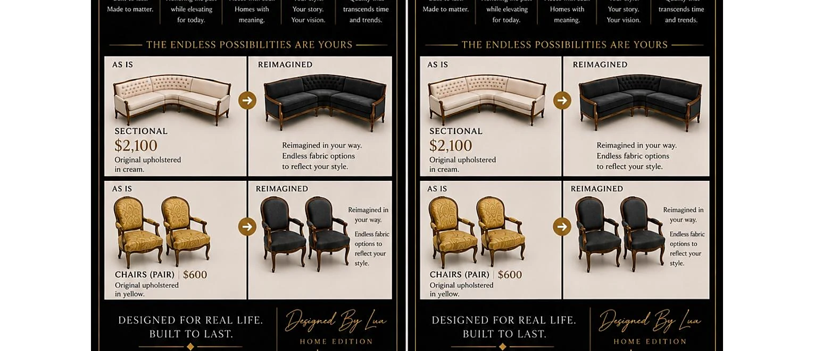

Interior Styling
A cohesive visual direction for rooms that need clarity, warmth, function, and a more intentional point of view.

Interiors · Furniture · Styling
Restoring spaces. Renewing possibilities.
Restore your spaceThe experience
Reimagined & Restored sees possibility where others may see something dated, overlooked, or finished. Through considered styling, thoughtful sourcing, and a respect for the story already present, rooms and pieces are renewed without losing the character that made them worth keeping.
Tell us what you are envisioningHow this pillar lives
A cohesive visual direction for rooms that need clarity, warmth, function, and a more intentional point of view.
Selected pieces reimagined through finish, fabric, placement, and detail rather than simply replaced.
Focused transformations using what you own, strategic additions, and a better relationship between space and purpose.
Mood, palette, sourcing, and styling guidance for homes, shoots, hospitality spaces, and special installations.
“Restoration is not about returning to what was. It is about revealing what can still become.”Designed By Lu

What guides the work
Restoration begins by noticing the quality, shape, memory, or potential that has not disappeared.
A stronger room often comes from clearer decisions, not simply more objects.
A space should be visually compelling and still support the real life unfolding inside it.
Begin here
Bring the date, the room, the story, the question, the dream—or simply the feeling you want to create. The first step is a conversation.
Restore your space